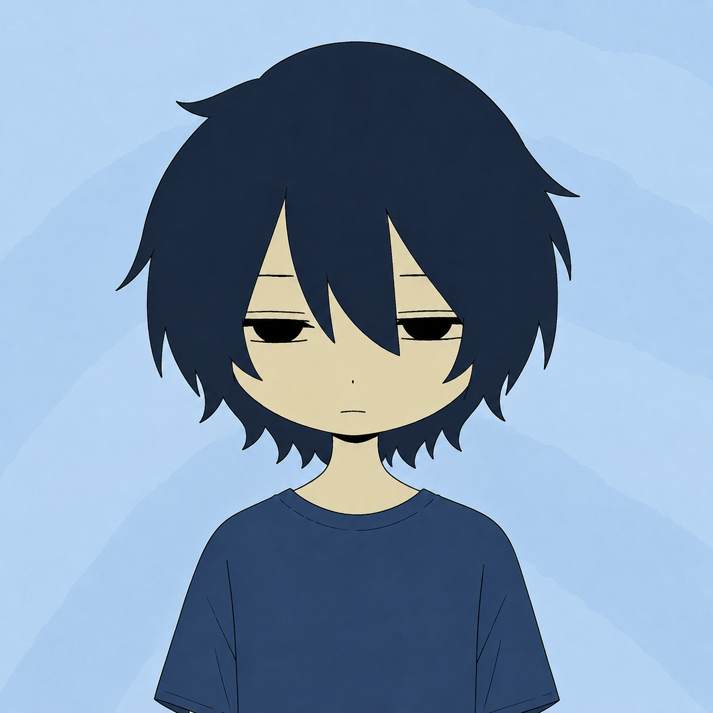

01 — WRITE
Posts & threads
Posts and threads that sound like me, get to the point and give readers a reason to stick around.
i write about the part of web3 that’s moving beyond tokens on a screen: real assets, markets and money finding their way onchain. lately, that’s meant spending a lot of time on RWA and figuring out what actually matters beyond the headline.

vw.most of my time goes into RWA: what’s being tokenized, who’s building around it, and whether any of it changes how people use financial products.
i got into web3 in 2023 through communities and content. the more i researched different projects, the more i wanted to understand what was happening beyond the usual token talk. that’s how i ended up focusing on RWAs.
i usually start with a simple question: why should anyone care about this? then i dig through the details and try to turn them into something you’d actually stop scrolling to read.
i’ve spent time on both sides of web3: making content and helping the communities around projects run.
I research projects and turn what I find into X posts, explainers and longer pieces. RWA is my main focus now, and I’m building my understanding of the space by writing about it consistently.
I’ve helped manage Web3 communities, handle moderation, keep conversations moving and coordinate community activities and events.
I take project news or a complicated idea and look for a way to explain it that sounds like a person talking, not a project announcement.
a few places to start if you want to get a feel for what i write. the posts are embedded below; the longer reads open on X.
If an embed is unavailable, the original post link remains available.
content and community support for teams building in Web3.
Posts and threads that sound like me, get to the point and give readers a reason to stick around.
RWA stories without the unnecessary jargon — what’s happening, how it works and why it might matter.
Keeping community chats useful, helping members out and making sure events and day-to-day activity don’t fall through the cracks.
if you’re working on something in RWA or web3 and need help with writing or community, feel free to reach out.